攻防世界-checkInGame
文章发布时间:
最后更新时间:
文章总字数:
预计阅读时间:
最后更新时间:
文章总字数:
460
预计阅读时间:
1 分钟
题目描述：
checkInGame
题目解题：
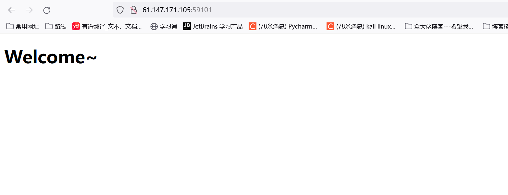
打开题目没啥信息，那看一下源码，发现有两个被注释掉的按钮，这里我也不知道如何利用。
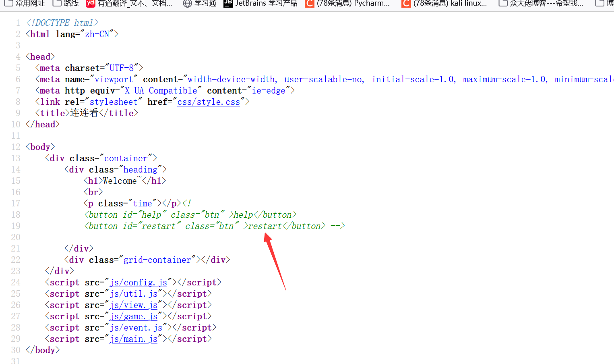
随后dirsearch扫了一下网站，没啥结果，这里也就没思路了，于是借鉴wp吧。
看了wp发现是题目环境的问题，我这里显示的都是无权限访问js相关文件，而佬的环境是正常的。但 既然碰到了，咱们就跟着wp走一遍也可。
本题是个js游戏，因为是前端页面，是使用js来实现的，那代码我们可以控制，而且可以调试。
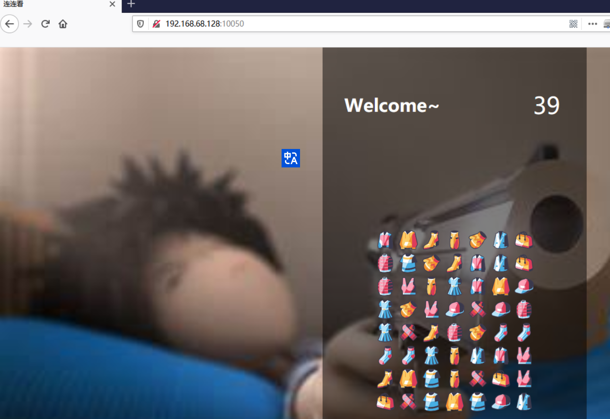
方法一：
burpsuite抓包，burpsuite不对包进行处理。然后在浏览器中做游戏，等到40秒过完时，点击确定，页面不会刷新，可以继续做，直到解出flag。
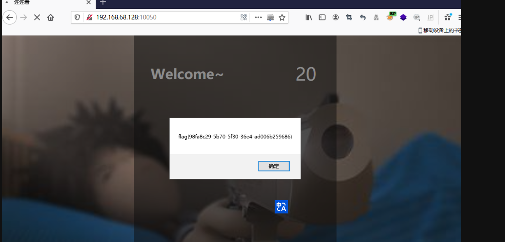
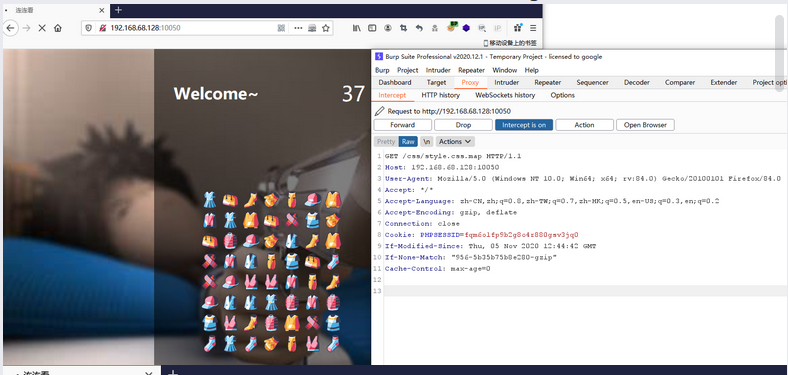
方法二：
访问http://IP:POTRT/，点击F12，查看js代码。
发现view.js初始化函数中有updateTime的属性，猜测是这个属性做了倒计时。
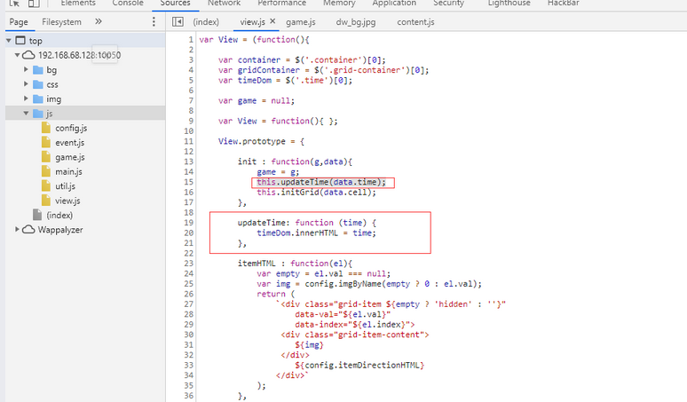
在game.js中调用了这个属性。
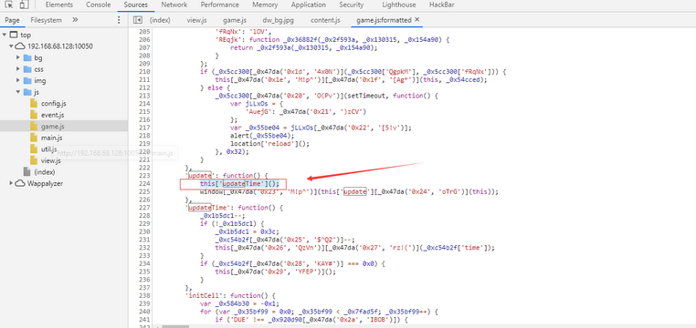
下载源码分析调试
ctrl+s下载源码
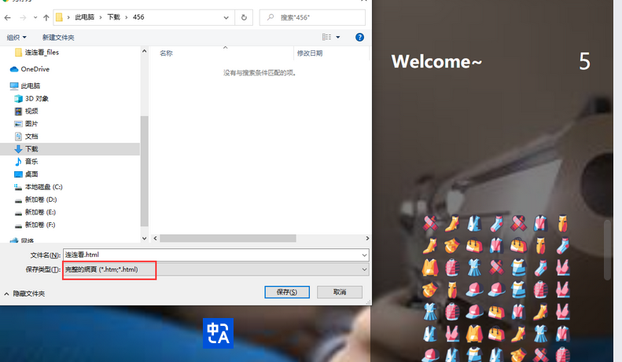
修改js文件后缀，即删除.下载
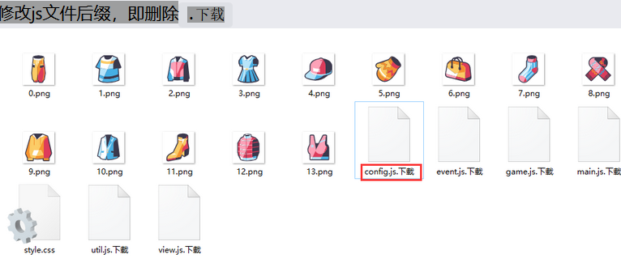
修改连连看.html中的js文件后缀，即删除.下载
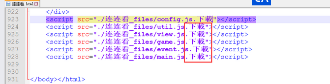
打开连连看.html,后发现图片没有正常显示，查看元素后，发现图片应该放在连连看.html同目录下img文件中。
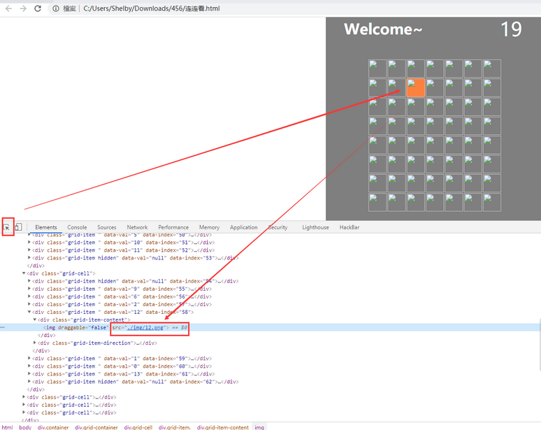
再次打开连连看.html，图片加载。
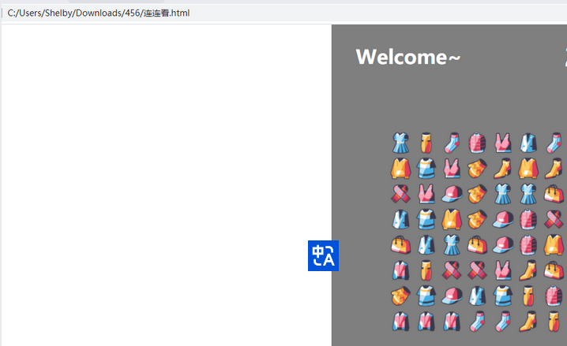
修改game.js文件，注释掉this['updateTime'](); 这段代码，或删除掉这段代码
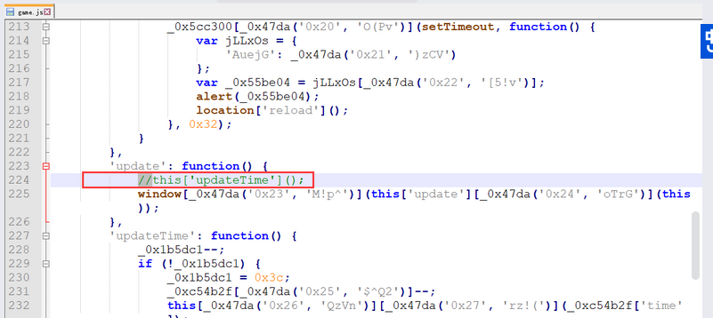
可以看到倒计时停在40秒。
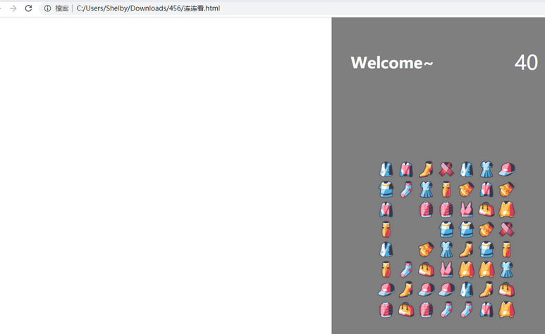
做完连连看获取flag。
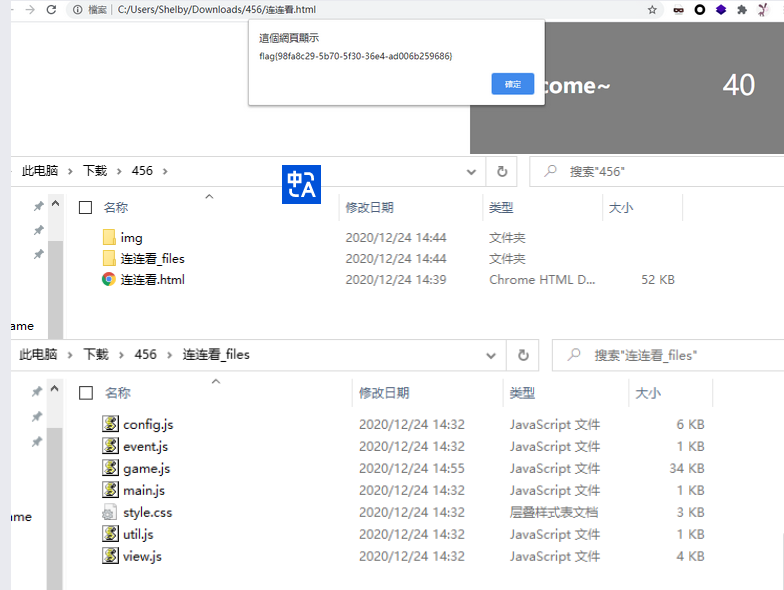
得到flag：flag{98fa8c29-5b70-5f30-36e4-ad006b259686}
参考文章：
【愚公系列】2023年06月 攻防世界-Web（checkInGame）
但这个文章只有一个方法，大家可以参考攻防世界的wp